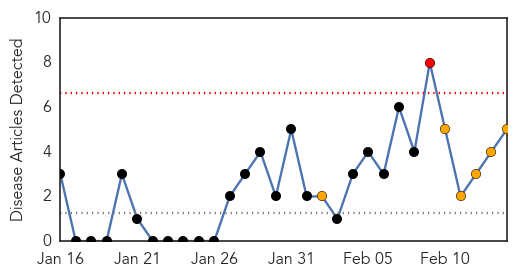
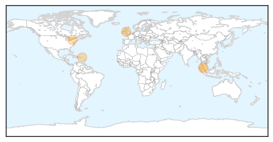
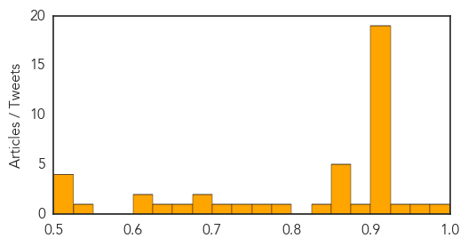

Dengue Fever
30-Day Web Trend
1 alerts, 6 warnings

30-Day Twitter Trend
0 alerts, 0 warnings

Article Locations
Article Confidences
Top Articles:
Top Tweets:
-
No tweets found for Feb 14, 2014
Unknown
30-Day Web Trend
0 alerts, 14 warnings
30-Day Twitter Trend
1 alerts, 0 warnings

Article Locations

Article Confidences
Top Articles:
- 0.984
- Boy becomes Cambodia's first bird flu death of year
- 0.974
- Children prone to hand-foot-and-mouth disease
- 0.928
- Manitoba has first case of pig virus; no risk to humans, other animals
- 0.917
- Chicago Tribune
- 0.917
- Chicago Tribune
- 0.917
- Chicago Tribune
- 0.917
- Chicago Tribune
- 0.917
- Chicago Tribune
- 0.917
- Chicago Tribune
- 0.917
- Chicago Tribune
- 0.917
- Chicago Tribune
- 0.917
- Chicago Tribune
- 0.917
- Chicago Tribune
- 0.917
- Chicago Tribune
- 0.917
- Chicago Tribune
- 0.917
- Chicago Tribune
- 0.917
- Chicago Tribune
- 0.917
- Chicago Tribune
- 0.917
- Chicago Tribune
- 0.917
- Chicago Tribune
- 0.904
- Vietnam bans Chinese poultry as new deadly bird-flu virus strain reaches border
- 0.902
- Manitoba sees first case of pig virus; no risk to humans, other animals
- 0.892
- Manitoba’s Farms under Threat of PEDv Virus Fatal for Piglets
- 0.866
- Obama pledges $1 billion in loan guarantees for Jordan
- 0.866
- Syria opposition has no conditions for third round of peace talks -spokesman
- 0.866
- Russia says Damascus wants opposition commitment to fight "terrorism"
- 0.866
- Russia warns West against interference in Ukraine
- 0.866
- Taha Zaid Khatir, 12, walks with an artificial limb at a prosthetic center in Sanaa
- 0.840
- Hong Kong reports fifth H7N9 bird flu case
- 0.786
- First suspected case of pig virus reported at Prince Edward Island pork farm
- 0.760
- Deadly pig virus shows up in Manitoba
- 0.749
- Deadly pig virus suspected on Prince Edward Island
- 0.705
- The most from the coast
- 0.693
- Child has third case of Tubercolosis in Sutherland
- 0.688
- Is leprosy making a comeback?
- 0.662
- Fish sold in Niles sickens two
- 0.630
- 4-Traders
- 0.622
- SA's TB rate among the highest in the world
- 0.619
- 13 Awful Things That Happen If You Don't Brush And Floss Your Teeth
- 0.548
- SGGP English Edition- Vietnam implements preventive measures against bird flu
- 0.512
- Shortage? Doctors in PH 'enough' – Ona
- 0.505
- Vietnam joins countries launching global health effort
- 0.503
- Morbidly obese patients died due to skills shortfalls, coroner rules
- 0.501
- Steps taken to address overcrowding in civilian sites ahead of rainy season in South Sudan
Top Tweets:
-
No tweets found for Feb 14, 2014